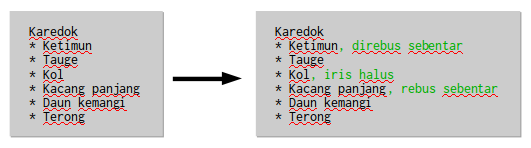
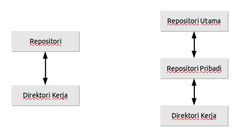
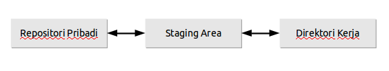

<!--
Learning Git for Beginner,
Presenter : Samsul Ma'arif <mail@samsul.web.id>

Template based on:
Google IO 2012/2013 HTML5 Slide Template

Authors: Eric Bidelman <ebidel@gmail.com>
         Luke Mahé <lukem@google.com>

URL: https://code.google.com/p/io-2012-slides
-->
<!DOCTYPE html>
<html>
<head>
  <title></title>
  <meta charset="utf-8">
  <meta http-equiv="X-UA-Compatible" content="chrome=1">
  <!--<meta name="viewport" content="width=device-width, initial-scale=1.0, minimum-scale=1.0">-->
  <!--<meta name="viewport" content="width=device-width, initial-scale=1.0">-->
  <!--This one seems to work all the time, but really small on ipad-->
  <!--<meta name="viewport" content="initial-scale=0.4">-->
  <meta name="apple-mobile-web-app-capable" content="yes">
  <link rel="stylesheet" media="all" href="theme/css/default.css">
  <link rel="stylesheet" media="only screen and (max-device-width: 480px)" href="theme/css/phone.css">
  <base target="_blank"> <!-- This amazingness opens all links in a new tab. -->
  <script data-main="js/slides" src="js/require-1.0.8.min.js"></script>
</head>
<body style="opacity: 0">

<slides class="layout-widescreen">

  <slide class="logoslide nobackground">
    <article class="flexbox vcenter">
      <span></span>
    </article>
  </slide>

  <slide class="title-slide segue nobackground">
    <aside class="gdbar"></aside>
    <!-- The content of this hgroup is replaced programmatically through the slide_config.json. -->
    <hgroup class="auto-fadein">
      <h1 data-config-title><!-- populated from slide_config.json --></h1>
      <h2 data-config-subtitle><!-- populated from slide_config.json --></h2>
      <p data-config-presenter><!-- populated from slide_config.json --></p>
    </hgroup>
  </slide>

  <slide>
    <hgroup>
      <h2>Apa itu VCS?</h2>
    </hgroup>
    <article>
      <ul class="build">
        <li>Version control adalah sebuah sistem yang mencatat setiap perubahan terhadap sebuah berkas atau kumpulan berkas sehingga pada suatu saat anda dapat kembali kepada salah satu versi dari berkas tersebut.</li>
        <li>Selengkapnya, klik <a href="http://git-scm.com/book/id/v1/Memulai-Git-Tentang-Version-Control">di sini</a>.</li>
      </ul>

    </article>
  </slide>

  <slide>
    <hgroup>
      <h2>Version Control System</h2>
    </hgroup>
    <article>

      <ul>
        <li>Pengelola Perubahan....</li>
      </ul> <br />
      <div class="centered"></div>
      <p>Contoh:</p>
      <ul class="build">
        <li>Subversion</li>
        <li>Bazar</li>
        <li>Mercurial</li>
        <li>Git</li>
      </ul>
      <footer class="source">source receipt: http://id.wikibooks.org/wiki/Resep:Karedok</footer>
    </article>
  </slide>

  <slide class="fill nobackground" style="background-image: url(images/sawah.jpg)">
    <hgroup>
      <h2 class="white">Apa yang kamu pikirkan?</h2>
    </hgroup>
    <footer class="source white">@desa_muktisari 29/04/2014 08:58</footer>
  </slide>

  <slide>
    <hgroup>
      <h2>Why Git?</h2>
    </hgroup>
    <article>
      <ul class="build">
        <li>Kecepatan.</li>
        <li>Desain yang sederhana.</li>
        <li>Dukungan penuh untuk pengembangan non-linear (ribuan cabang paralel).</li>
        <li>Terdistribusi secara penuh.</li>
        <li>Mampu menangani proyek besar seperti Kernel Linux secara efisien (dalam kecepatan dan ukuran data).</li>
        <li>Sudah saya coba :-P</li>
      </ul>
      <div class="pull-right"></div>
    </article>
  </slide>

  <slide>
    <hgroup>
      <h2>Alur Kerja</h2>
    </hgroup>
    <article>
      <ol class="build">
      <li>Buat repositori</li>
      <li>Salin revisi</li>
      <li>Ubah, tambah, hapus</li>
      <li>Kirim perubahan ke repositori</li>
      </ol>
      <br />
	  <div class="pull-right"></div>
    </article>
  </slide>

  <slide>
    <hgroup>
      <h2 class="centered">Terpusat Vs Terdistribusi</h2>
    </hgroup>
    <article>
	<div class="centered"></div>
    </article>
  </slide>

  <slide>
    <hgroup>
      <h2 class="centered">Alur Kerja Tambahan</h2>
    </hgroup>
    <article>
      <ul class="build">
      <li>Salin repositori</li>
      <li>Kirim perubahan ke repositori lain</li>
      </ul>
      <br />
	  <div class="pull-right"></div>
    </article>
  </slide>

  <slide>
    <hgroup>
      <h2 class="centered">git init</h2>
    </hgroup>
    <article>
      <ul>
      <li>Membuat repositori baru</li>
      </ul>
      <br />
		<p>
		<span class="red">$ mkdir resep<br />
		$ cd resep<br />
		$ git init</span><br />
		<span class="green">Initialized empty Git repository in /home/samsul/resep/.git/</span><br />
		<br />
		<span class="red">$ ls -a</span><br />
		<span class="green">.  ..  .git</span><br />
		</p>
    </article>
  </slide>

  <slide>
    <hgroup>
      <h2 class="centered">git add</h2>
    </hgroup>
    <article>
      <ul>
      <li>Mendaftarkan berkas untuk disimpan</li>
      </ul>
      <br />
		<p>
		<span class="red">$ vim karedok.txt<br />
		$ git add karedok.txt<br />
		</p>
		<footer class="put-bottom">Konsep penting untuk diketahui: <span class="blue">Staging area</span><br />
		Akan dibahas nanti!</footer>
    </article>
  </slide>

  <slide>
    <hgroup>
      <h2 class="centered">git commit</h2>
    </hgroup>
    <article>
      <ul>
      <li>Menyimpan perubahan ke repositori</li>
      </ul>
      <br />
		<p>
		<span class="red">$ git commit -m "resep karedok"</span><br />
		<span class="green">[master (root-commit) 066ee9e] resep karedok<br />
		 &nbsp;1 files changed, 8 insertions(+), 0 deletions(-)<br />
		 &nbsp;create mode 100644 karedok.txt</span><br />
		</p>
		<footer class="put-bottom">Hanya akan menyimpan perubahan <br />
		yang sudah dimasukkan dalam: <span class="blue">Staging area</span></footer>
    </article>
  </slide>


  <slide>
    <hgroup>
      <h2 class="centered">Staging Area</h2>
    </hgroup>
    <article>
      <ul>
      <li>Berisi perubahan yang <span class="blue">akan disimpan</span> pada saat commit.</li>
      <li>Berguna untuk commit secara <span class="blue">selektif</span>.</li>
      </ul><br />
      <div class="centered"></div>
    </article>
  </slide>

  <slide>
    <hgroup>
      <h2 class="centered">Git Philosophy</h2>
    </hgroup>
    <article>
      <ul class="build">
        <li>Commit early, commit often</li>
		<li>One commit represents one idea or one change.</li>
		<li>Your working directory, index, and local repo are your scratch pads.</li>
      </ul>
	  <footer class="put-bottom">Advanced Git Tutorial by Sarah Sharp<br />
	  http://thesharps.us/~sarah/advanced-git.pdf</footer>
    </article>
  </slide>

  <slide>
    <hgroup>
      <h2 class="centered">git add</h2>
    </hgroup>
    <article>
      <ul>
        <li>Menambahkan berkas baru.</li>
		<li>Menyimpan perubahan ke staging area.</li>
      </ul>
      
		<pre class="prettyprint">
$ vim karedok.txt
$ git commit -m "tambah petunjuk"
# On branch master
# Changed but not updated:
#   (use "git add <file>..." to update what will be committed)
#   (use "git checkout -- <file>..." to discard changes in working directory)
#
#	modified:   karedok.txt
#
no changes added to commit (use "git add" and/or "git commit -a")
$ git add karedok.txt
$ git commit -m "tambah petunjuk"
[master 84801e1] tambah petunjuk
 1 files changed, 3 insertions(+), 3 deletions(-)      </pre>
      
    </article>
  </slide>

  <slide>
    <hgroup>
      <h2 class="centered">Ilustrasi Staging Area</h2>
    </hgroup>
    <article>
      <p>kondisi sebelum <span class="red">git add</span></p>
      <pre class="prettyprint">
$ vim karedok.txt                 <~~~~ perubahan dibuat
$ git status
# On branch master
# Changed but not updated:        <~~~~ perubahan terdeteksi 
#                                       namun belum masuk ke 
#   modified:   karedok.txt             staging area
#

$ git add karedok.txt          <~~~~~ memasukkan perubahan ke staging area
$ git status
# On branch master
# Changes to be committed:     <~~~~~ perubahan tercatat di staging area
#
#   modified:   karedok.txt
#      
      </pre>
    </article>
  </slide>


  <slide class="segue dark nobackground">
    <aside class="gdbar"></aside>
    <hgroup class="auto-fadein">
      <h2>Kolaborasi</h2>
      <h3>Build Software Better Together</h3>
    </hgroup>
  </slide>

  <slide>
    <hgroup>
      <h2 class="centered">Kolaborasi</h2>
    </hgroup>
    <article>
      <ol class="build">
        <li>Menyalin repositori.</li>
		<li>Membuat perubahan lokal.</li>
		<li>Mengirim perubahan ke repositori lain.</li>
		<li>Ini yang akan kita praktekkan.</li>
      </ol>
    </article>
  </slide>

  <slide>
    <hgroup>
      <h2 class="centered">git clone</h2>
    </hgroup>
    <article>
      <ul>
        <li>Menyalin repositori.</li>
      </ul>
      <pre>
$ git clone https://github.com/samsulmaarif/Hallo.git
Cloning into 'Hallo'...
remote: Counting objects: 55, done.
remote: Total 55 (delta 0), reused 0 (delta 0)
Unpacking objects: 100% (55/55), done.
Checking connectivity... done.
      
$ ls
Hallo      
      </pre>
    </article>
  </slide>

  <slide>
    <hgroup>
      <h2 class="centered">git log</h2>
    </hgroup>
    <article>
      <ul>
        <li>Melihat riwayat perubahan.</li>
      </ul>
      <pre>
$ git log
commit 0c98d3c8568136711b5509509ad957c2a4cbce0a
Author: Samsul Ma'arif <admin@samsul.web.id>
Date:   Thu Dec 1 00:49:54 2011 +0700

    perubahan pada README

commit ba9caf1f898363abe19358dc68828868f430f292
Author: Samsul Ma'arif <admin@samsul.web.id>
Date:   Thu Dec 1 00:44:05 2011 +0700

    program pertama Halo

commit 6b4a88c4452e38fb77a8dd5dfb368f19d9e8fba9
Author: Samsul Ma'arif <admin@samsul.web.id>
Date:   Thu Dec 1 00:39:43 2011 +0700

    commit pertama 
      </pre>
    </article>
  </slide>

  <slide>
    <hgroup>
      <h2 class="centered">git remote</h2>
    </hgroup>
    <article>
      <ul>
        <li>Repositori lain yang dipakai.</li>
      </ul>
      <pre>
$ git remote
origin

$ git remote show origin
* remote origin
  Fetch URL: https://github.com/samsulmaarif/Hallo.git
  Push  URL: https://github.com/samsulmaarif/Hallo.git
  HEAD branch: master
  Remote branches:
    gh-pages tracked
    master   tracked
  Local branch configured for 'git pull':
    master merges with remote master
  Local ref configured for 'git push':
    master pushes to master (up to date)
      </pre>
    </article>
  </slide>

  <slide>
    <hgroup>
      <h2 class="centered">git push</h2>
    </hgroup>
    <article>
      <ul>
        <li>Mengirim perubahan ke repositori lain.</li>
      </ul>
      <pre>
$ git push -u origin master
Counting objects: 3, done.
Delta compression using up to 2 threads.
Compressing objects: 100% (2/2), done.
Writing objects: 100% (3/3), 358 bytes | 0 bytes/s, done.
Total 3 (delta 0), reused 0 (delta 0)
To https://github.com/samsulmaarif/git-smktika.git
 * [new branch]      master -> master
Branch master set up to track remote branch master from origin.
      </pre>
    </article>
  </slide>

  <slide class="segue dark quote nobackground">
    <aside class="gdbar right bottom"></aside>
    <article class="flexbox vleft auto-fadein">
      <q>
        Talk is cheap, show me the code.
      </q>
      <div class="author">
        - Linus Torvalds -<br>
        Linux Creator
      </div>
    </article>
  </slide>

  <slide class="thank-you-slide segue nobackground">
    <aside class="gdbar right"></aside>
    <article class="flexbox vleft auto-fadein">
      <h2>&lt;Thank You!&gt;</h2>
      <p>Pertanyaan?.</p>
    </article>
    <p class="auto-fadein" data-config-contact>
      <!-- populated from slide_config.json -->
    </p>
  </slide>

  <slide class="logoslide dark nobackground">
    <article class="flexbox vcenter">
      <span></span>
    </article>
  </slide>

  <slide class="backdrop"></slide>

</slides>

<script>
var _gaq = _gaq || [];
_gaq.push(['_setAccount', 'UA-XXXXXXXX-1']);
_gaq.push(['_trackPageview']);

(function() {
  var ga = document.createElement('script'); ga.type = 'text/javascript'; ga.async = true;
  ga.src = ('https:' == document.location.protocol ? 'https://ssl' : 'http://www') + '.google-analytics.com/ga.js';
  var s = document.getElementsByTagName('script')[0]; s.parentNode.insertBefore(ga, s);
})();
</script>

<!--[if IE]>
  <script src="http://ajax.googleapis.com/ajax/libs/chrome-frame/1/CFInstall.min.js"></script>
  <script>CFInstall.check({mode: 'overlay'});</script>
<![endif]-->
</body>
</html>
